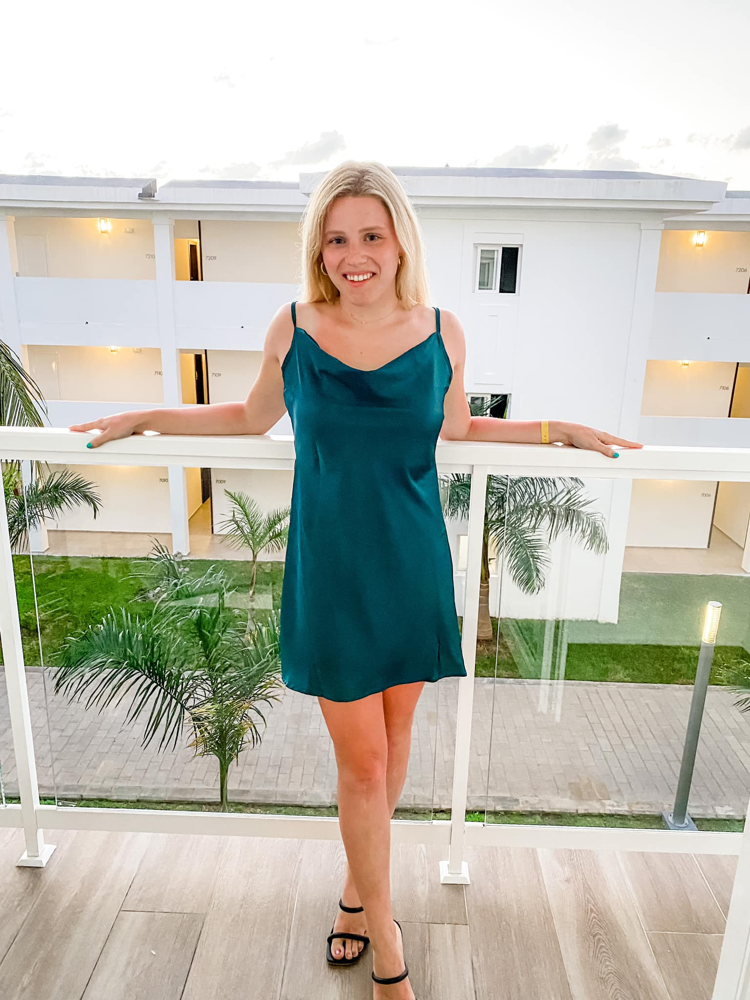

Hi there!
I am currently a junior at UW Madison majoring in Communiations with a certificate in Digital Studies. I am interning this summer at Colony Brands in Monroe, Wisconsin. Colony Brands holds a lot of my similiar beliefs and offers a great work environment. I am super excited to learn and grow my proffesional career there. I will use this website as a place for you to get to know me more and look at some of my work expereince and photos.
I grew up in a small town called Argyle, Wisconsin. My parents own a dairy farm, and I have been blessed to grow up where I did. I am a family oriented person- family is so important to me! I have two older sisters and one older brother. I have two nieces and one nephew. In my free time, I love spending time with my family and traveling. Some of my favortie vacations have been to Jamaica, Gulf Shores, and Florida.
Some fun facts about me!
- I LOVE to bake and cook! Trying new recipes is my favorite!
- I graduated in a class of 26 people.
- I do not like spicy food!
- I participated in three sports in high school- volleyball, basketball, and softball.
- I am an extrovert and love to talk to people!